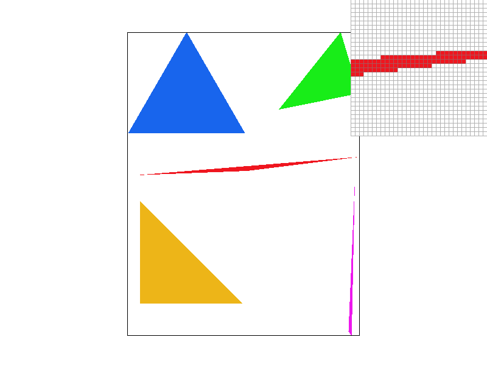
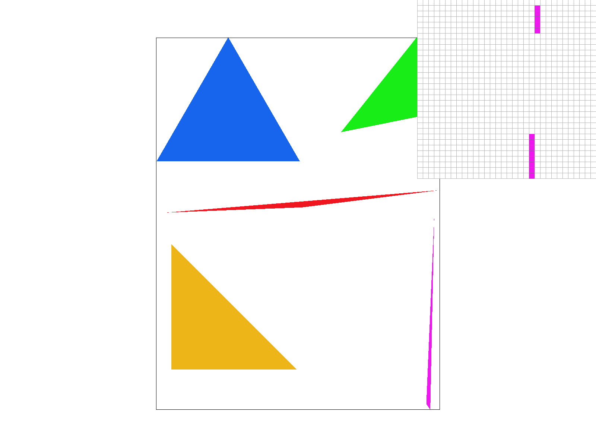
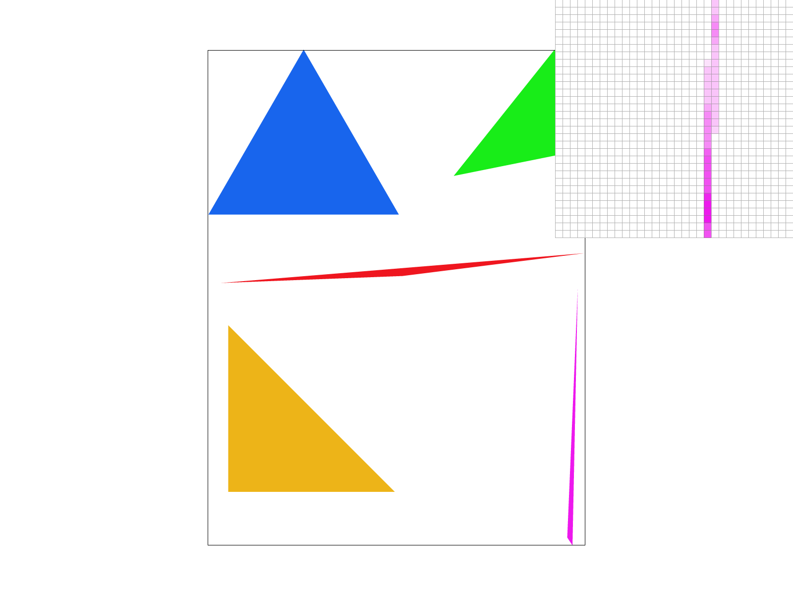
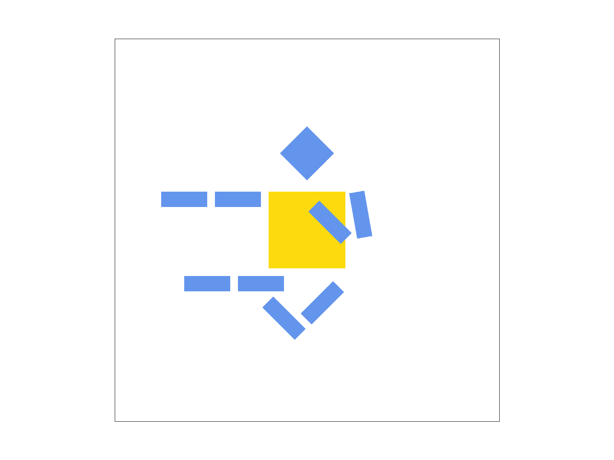
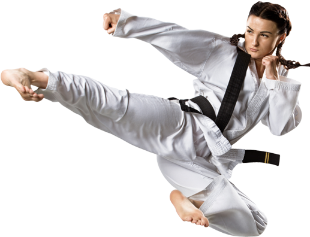
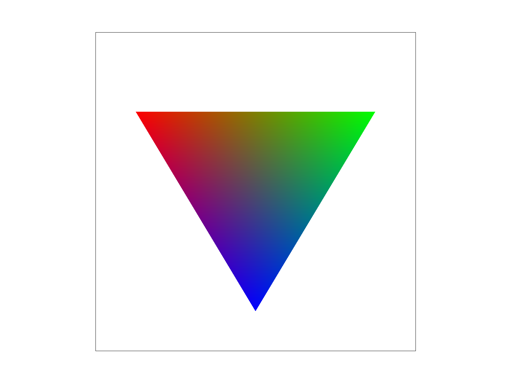
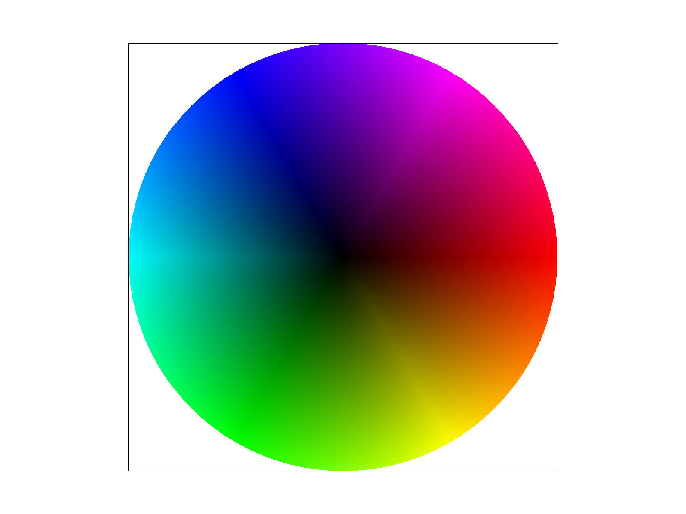
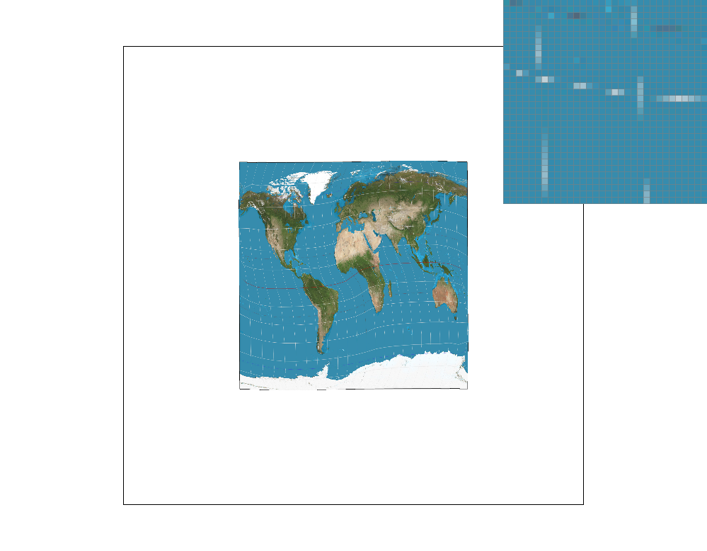
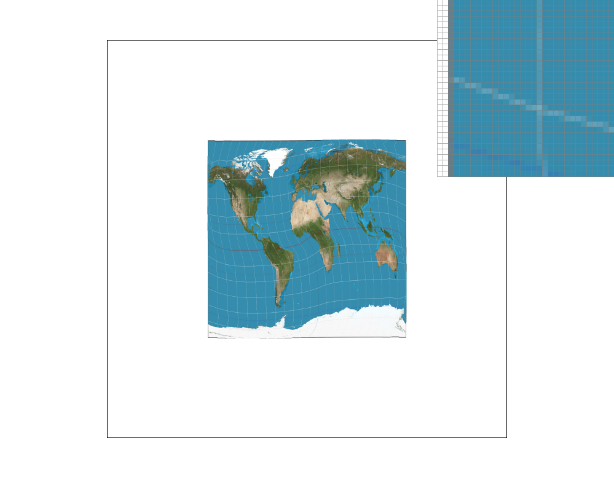
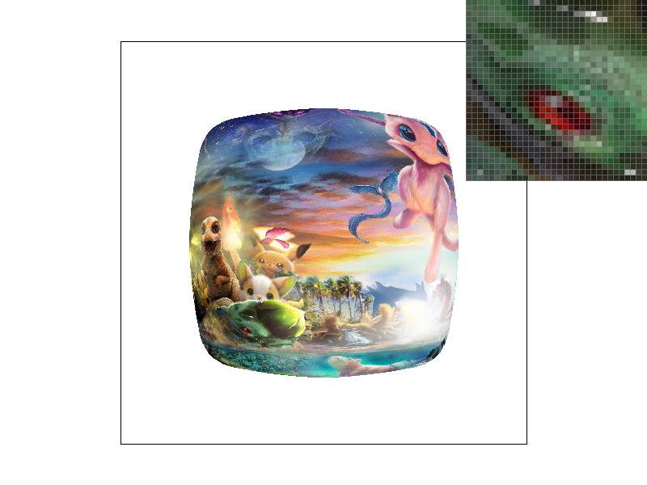

Give a high-level overview of what you implemented in this project. Think about what you've built as a whole. Share your thoughts on what interesting things you've learned from completing the project.
To rasterize triangles, I:
My algorithm is no worse than one that checks each sample within the bounding box of the triangle because I make sure my loops only go through points inside the bounding box. Here is a screenshot of basic/test4.svg that demonstrates some problematic jaggies:
For the supersampling algorithm, I:
Super sampling is useful because it gets rid of jaggies and makes the images much clearer from a distance by introducing a gradual blur towards the edges in an image. I modified the rasterization pipeline by enlarging the sample buffer, iterating through the subpixels and adding those color values into the sample bugger, and averaging down the sample buffer subpixel color values to then add to the frame buffer. I used supersampling to antialias my triangles by removing jaggies and replacing them with a gradual blur that looks much clearer and sharper from a distance. Here are the compared effects:
|

|
|

|
These results are observed because when you increase the super sampling rate, you can capture tiny parts of the pixel that are inside the triangle and give that pixel a slight blur, and this blur will smoothly decrease as more of the pixel is inside the triangle, resulting in a nice, sharp look from a distance.
|

|

|
Barycentric coordinates are a way of representing a point within a triangle in terms of the ratios of the areas of
three smaller triangles that share the same vertices as the original triangle. The three smaller triangles are created
by connecting the point of interest to each of the vertices of the triangle. The barycentric coordinates are then the
ratios of the areas of these three smaller triangles to the total area of the original triangle.
Given a triangle with vertices A, B, and C and a point P within the triangle, the barycentric
coordinates (α, β, γ) of P are the non-negative numbers that satisfy the following conditions:
Let's say that the triangle has vertices A, B, and C with colors (R1, G1, B1), (R2, G2, B2), and (R3, G3, B3) respectively. Let (α, β, γ) be the barycentric coordinates of a point P within the triangle. Then, the color of point P can be calculated as:
In other words, the red component of the color at point P is equal to the weighted average of the red components of the colors at vertices A, B, and C, where the weights are given by the barycentric coordinates α, β, and γ. Similarly, the green and blue components of the color at point P are calculated as weighted averages of the green and blue components at the vertices. This interpolation method gives a smooth color transition across the triangle, with the colors at the vertices being blended together in a way that depends on the location of the point within the triangle.
|

|

|
Pixel sampling consists of mapping a screen pixel to a location on a texture map for its color values using sampling methods. I implemented nearest pixel sampling and bilinear interpolation for texture mapping. In nearest pixel sampling, the color value of the pixel on the texture map that is closest to the pixel in the screen space is used based on the given uv coordinates. In bilinear interpolation, the color values of the four closest pixels on the texture map are used in a weighted average to determine the screen pixel color, where the weights are determined by the screen pixel's distance to each of the four points on the texture map, computed through bilinear interpolation. To implement this, I:
|
|

|
|
|

|
Level sampling is a technique used in texture mapping to determine the color or other properties of a texture at a
specific point on a surface. It involves selecting the mipmap level that best matches the size of the texel (texture
element) being sampled, to minimize distortion or blurring.
We used level sampling in 3 different cases, L_ZERO, L_NEAREST, and L_LINEAR. L_ZERO was the base case where no level
sampling was needed, because the level was set at 0. L_NEAREST involved us having to first compute the mipmap level and
round it to the nearest integer. For L_LINEAR we didn’t round it to the nearest integer - rather we computed the
textColor for the upper and lower mipmap levels and weighted them based on how far the level is from each. For both
L_LINEAR and L_NEAREST we had to use the level calculation formula given in lecture 5 slide 85.
While comparing the different sampling levels, methods, and pixel sampling, we saw that they all roughly took the same
amount of time, with increased sampling level being slightly slower for detailed images. Nearest level sampling requires
less memory than linear sampling since it only needs to store the mipmap levels, which are smaller in size compared to
the original texture. However, it may not produce smooth results when the texture is magnified or minified, and this is
a trade-off between nearest level and linear.
Pixel sampling also tends to struggle with antialiasing artifacts that may come up. This is where the number of samples
comes in. Using the weighted average we are able to reduce aliasing artifacts and produce smoother results. However, the
time taken and memory used take a hit.
Level sampling also takes more memory than pixel sampling (albeit not much of a difference for us) but the antialiasing
power is stronger and less memory is used.
|
|
|
|

|
|
If you are not participating in the optional art competition, don't worry about this section!